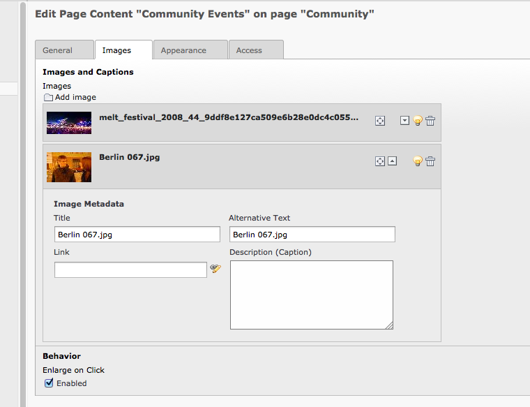
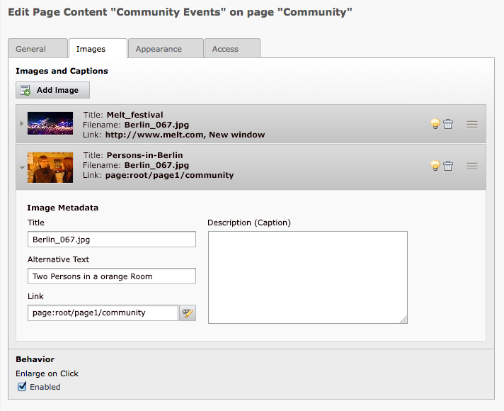
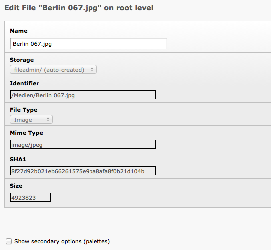
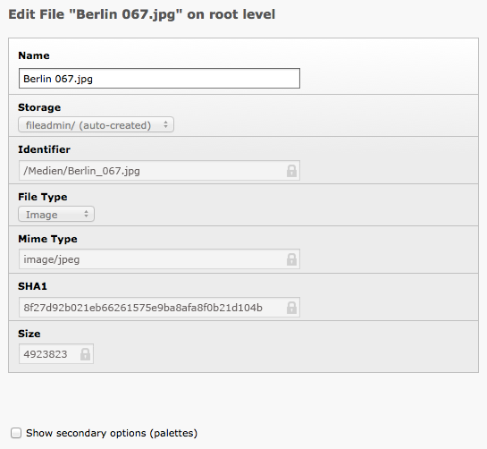
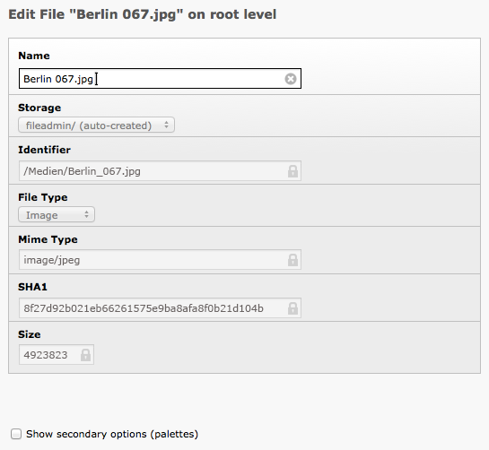
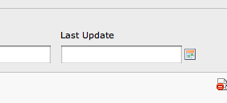
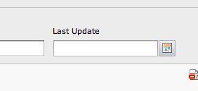
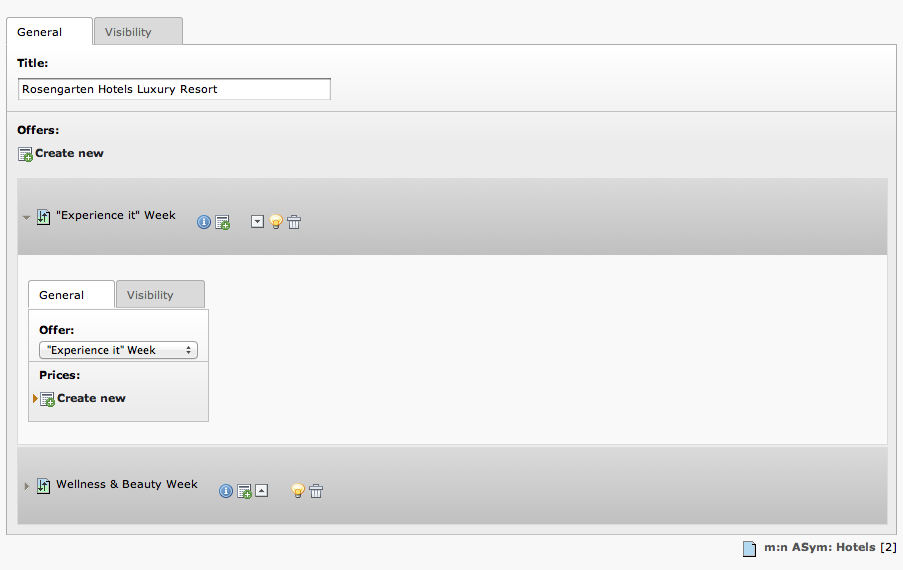

Suggestion #36052
Visual improvements for IRRE (in Fal)
| Status: | Resolved | Start date: | ||
|---|---|---|---|---|
| Priority: | Should have | Due date: | ||
| Assigned To: | Jens Hoffmann | % Done: | 0% |
|
| Category: | Design | |||
| Target version: | TYPO3 4.7 | |||
| Tags: |
Description
Old:

New:

<hr>
Old:

New:


{kind=link}
{kind=link}
{kind=link}
{kind=link}
{kind=link}
{kind=link}
{kind=link}
{kind=link}
{kind=link}
{kind=link}
{kind=link}
{kind=link}
{kind=link}
{kind=link}
Related issues
Associated revisions
[TASK] Refactor IRRE to meet new UI requirements
The UI of IRRE should be adapted to be to the new designs.
In this matter we need to adapt the Collapse/Expand
behaviour which is now build wih jQuery.
Releases: 6.0
Resolves: #36052
Change-Id: I6ce22f9e147b03b9d9d630372ea221b5f5cddc86
Reviewed-on: http://review.typo3.org/12676
Reviewed-by: Helmut Hummel
Tested-by: Helmut Hummel
Reviewed-by: Soren Malling
Tested-by: Soren Malling
Reviewed-by: Steffen Ritter
Tested-by: Steffen Ritter
History
#1 Updated by Jens Hoffmann over 3 years ago
- File fal-meta-data-form-new1.png added
- File fal-meta-data-form-new2.png added
- File fal-meta-data-new3.png added
#2 Updated by Jens Hoffmann over 3 years ago
- File deleted (
fal-meta-data-form-new.png)
#3 Updated by Jens Hoffmann over 3 years ago
- File deleted (
fal-meta-data-new.png)
#4 Updated by Jens Hoffmann over 3 years ago
- File arrow-close.png added
- File arrow-open.png added
- File browse-btn.png added
- File form-input-close.png added
- File handle.png added
Parts:
#5 Updated by Felix Kopp about 3 years ago
- File calendar-button.png added
- File before.png added
- File after.jpg added
What about the date fields:
These also have calendar icons next to the field.
Before

After

Toolbox (sprite with button background)
#6 Updated by Jens Hoffmann about 3 years ago
Like! :)
#7 Updated by Gerrit Code Review about 3 years ago
Patch set 2 for branch master has been pushed to the review server.
It is available at http://review.typo3.org/12676
#8 Updated by Gerrit Code Review about 3 years ago
Patch set 3 for branch master has been pushed to the review server.
It is available at http://review.typo3.org/12676
#9 Updated by Oliver Hader about 3 years ago
- File review_olly.png added
See screenshot after change in Safari/Mac

#10 Updated by Jens Hoffmann about 3 years ago
Goes into the right direction! Nice! :)
#11 Updated by Gerrit Code Review about 3 years ago
Patch set 4 for branch master has been pushed to the review server.
It is available at http://review.typo3.org/12676
#12 Updated by Steffen Ritter about 3 years ago
- Status changed from Accepted to Resolved
- % Done changed from 0 to 100
Applied in changeset commit:392f47b34a5559f2e50794369afbc4d60e840cbe.
#13 Updated by Gerrit Code Review about 2 years ago
Patch set 1 for branch master has been pushed to the review server.
It is available at https://review.typo3.org/21916
#14 Updated by Gerrit Code Review about 2 years ago
Patch set 2 for branch master has been pushed to the review server.
It is available at https://review.typo3.org/21916
#15 Updated by Gerrit Code Review about 2 years ago
Patch set 3 for branch master has been pushed to the review server.
It is available at https://review.typo3.org/21916
#16 Updated by Gerrit Code Review about 2 years ago
Patch set 4 for branch master has been pushed to the review server.
It is available at https://review.typo3.org/21916
#17 Updated by Gerrit Code Review about 2 years ago
Patch set 5 for branch master has been pushed to the review server.
It is available at https://review.typo3.org/21916
#18 Updated by Gerrit Code Review about 2 years ago
Patch set 6 for branch master has been pushed to the review server.
It is available at https://review.typo3.org/21916
#19 Updated by Gerrit Code Review about 2 years ago
Patch set 7 for branch master has been pushed to the review server.
It is available at https://review.typo3.org/21916
#20 Updated by Markus Klein about 2 years ago
I suggest to always show the currently valid title of an image.
This means that if the editor specifies a title in the reference, this title will be shown.
If no title is specified, the title from the file is displayed.
#21 Updated by Jens Hoffmann about 2 years ago
ok :)
#22 Updated by Gerrit Code Review about 2 years ago
Patch set 8 for branch master has been pushed to the review server.
It is available at https://review.typo3.org/21916
#23 Updated by Gerrit Code Review about 2 years ago
Patch set 9 for branch master has been pushed to the review server.
It is available at https://review.typo3.org/21916
#24 Updated by Gerrit Code Review about 2 years ago
Patch set 10 for branch master has been pushed to the review server.
It is available at https://review.typo3.org/21916
#25 Updated by Gerrit Code Review about 2 years ago
Patch set 11 for branch master has been pushed to the review server.
It is available at https://review.typo3.org/21916
#26 Updated by Gerrit Code Review about 2 years ago
Patch set 12 for branch master has been pushed to the review server.
It is available at https://review.typo3.org/21916
#27 Updated by Gerrit Code Review about 2 years ago
Patch set 13 for branch master has been pushed to the review server.
It is available at https://review.typo3.org/21916
#28 Updated by Gerrit Code Review about 2 years ago
Patch set 14 for branch master has been pushed to the review server.
It is available at https://review.typo3.org/21916
#29 Updated by Gerrit Code Review about 2 years ago
Patch set 15 for branch master has been pushed to the review server.
It is available at https://review.typo3.org/21916
#30 Updated by Gerrit Code Review about 2 years ago
Patch set 16 for branch master has been pushed to the review server.
It is available at https://review.typo3.org/21916
#31 Updated by Gerrit Code Review about 2 years ago
Patch set 17 for branch master has been pushed to the review server.
It is available at https://review.typo3.org/21916
#32 Updated by Gerrit Code Review about 2 years ago
Patch set 18 for branch master has been pushed to the review server.
It is available at https://review.typo3.org/21916
#33 Updated by Gerrit Code Review about 2 years ago
Patch set 19 for branch master has been pushed to the review server.
It is available at https://review.typo3.org/21916